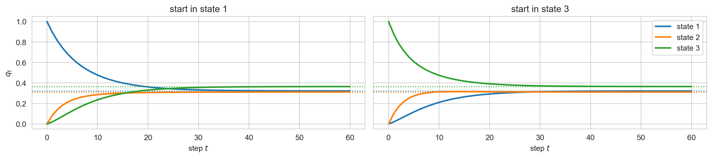
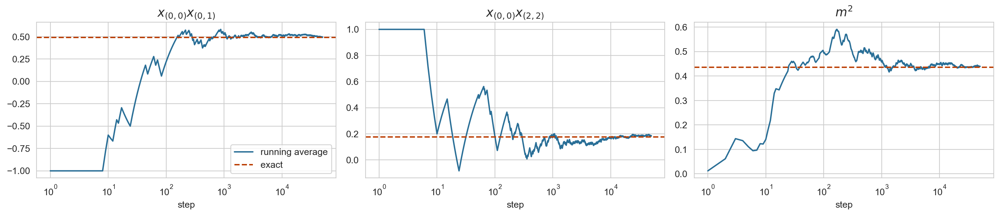
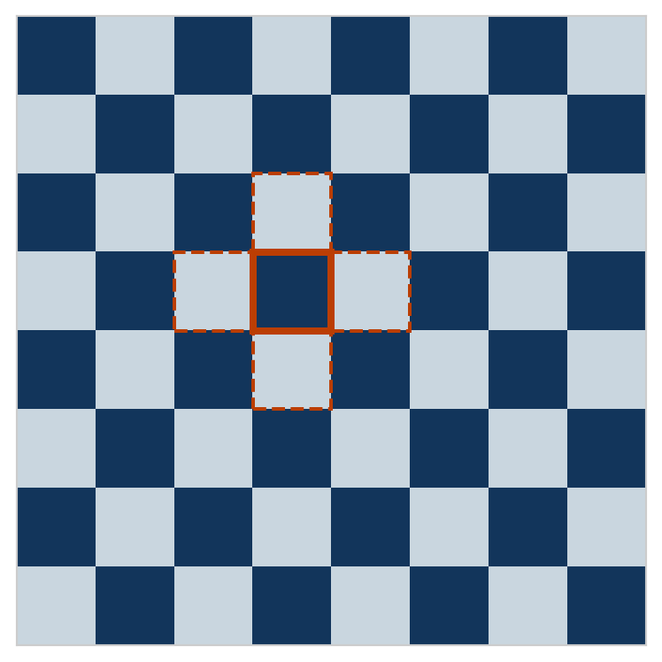

Markov chain Monte Carlo
Department of Biostatistics and Computational Biology, University of Rochester Medical Center
The Ising model on an \(n \times n\) grid with spins \(x_i \in \{-1, +1\}\):
\[ p(\mathbf{x}) = \frac{1}{Z(\beta)} \exp\Big(\beta \sum_{i \sim j} x_i x_j\Big), \qquad Z(\beta) = \sum_{\mathbf{x}} \exp\Big(\beta \sum_{i \sim j} x_i x_j\Big). \]
Many questions about a distribution can be written as expectations:
\[ \Pr_p(\mathbf{x} \in A) = \mathbb{E}_p[\mathbf{1}\{\mathbf{x} \in A\}], \qquad \operatorname{Cov}_p(x_i, x_j) = \mathbb{E}_p[x_i x_j] - \mathbb{E}[x_i] \mathbb{E}[x_j]. \]
Our computational goal is to estimate \(\mathbb{E}_p[f(\mathbf{x})]\) for functions \(f\) of interest, even when we cannot draw independent samples from \(p\).
For every current state \(\mathbf{x}\), a transition kernel \(T(\cdot \mid \mathbf{x})\) is a probability distribution over the next state \(\mathbf{x}'\):
\[ T(\mathbf{x}' \mid \mathbf{x}) \geq 0, \qquad \sum_{\mathbf{x}'} T(\mathbf{x}' \mid \mathbf{x}) = 1. \]
Run the chain by repeatedly drawing from this distribution:
\[ \mathbf{x}^{(t+1)} \sim T(\cdot \mid \mathbf{x}^{(t)}). \]
A distribution \(\pi\) is stationary (or invariant) for \(T\) if one step leaves it unchanged:
\[ \pi(\mathbf{x}') = \sum_{\mathbf{x}} \pi(\mathbf{x}) \, T(\mathbf{x}' \mid \mathbf{x}) \quad \text{for every } \mathbf{x}', \qquad \text{i.e. } \pi T = \pi. \]

The regime chain from Assignment 2, started in two different states. The distribution of the state forgets where it began and settles at \(\pi\) (dotted). MCMC turns this around: choose \(T\) so that the \(\pi\) it settles at is the \(p\) we want.
\(T\) satisfies detailed balance with respect to \(\pi\) if, for every pair of states,
\[ \pi(\mathbf{x}) \, T(\mathbf{x}' \mid \mathbf{x}) = \pi(\mathbf{x}') \, T(\mathbf{x} \mid \mathbf{x}'). \]
The flow from \(\mathbf{x}\) to \(\mathbf{x}'\) equals the flow back. It implies stationarity in one line: sum both sides over \(\mathbf{x}\),
\[ \sum_{\mathbf{x}} \pi(\mathbf{x}) \, T(\mathbf{x}' \mid \mathbf{x}) = \pi(\mathbf{x}') \sum_{\mathbf{x}} T(\mathbf{x} \mid \mathbf{x}') = \pi(\mathbf{x}'). \]
Target \(p(\mathbf{x}) = \tilde p(\mathbf{x}) / Z\), known up to \(Z\). Proposal \(q(\mathbf{x}' \mid \mathbf{x})\), anything we can sample from. Initialize \(\mathbf{x}\).
Claim. The Metropolis-Hastings kernel satisfies detailed balance with respect to \(p\), and therefore leaves \(p\) stationary.
The kernel. For \(\mathbf{x}' \neq \mathbf{x}\) the chain lands on \(\mathbf{x}'\) only by proposing it and accepting, so \[ T(\mathbf{x}' \mid \mathbf{x}) = q(\mathbf{x}' \mid \mathbf{x})\, \alpha(\mathbf{x} \to \mathbf{x}'), \qquad \alpha(\mathbf{x} \to \mathbf{x}') = \min\left(1,\; \frac{p(\mathbf{x}')\, q(\mathbf{x} \mid \mathbf{x}')}{p(\mathbf{x})\, q(\mathbf{x}' \mid \mathbf{x})}\right), \] and \(T(\mathbf{x} \mid \mathbf{x}) = 1 - \sum_{\mathbf{x}' \neq \mathbf{x}} q(\mathbf{x}' \mid \mathbf{x})\, \alpha(\mathbf{x} \to \mathbf{x}')\) collects every rejection.
Fix \(\mathbf{x}' \neq \mathbf{x}\) and suppose both proposal flows are positive. Define the Hastings ratio for the move \(\mathbf{x} \to \mathbf{x}'\): \[ r = \frac{p(\mathbf{x}')q(\mathbf{x} \mid \mathbf{x}')} {p(\mathbf{x})q(\mathbf{x}' \mid \mathbf{x})}. \]
For the reverse move \(\mathbf{x}' \to \mathbf{x}\), the ratio is \(1/r\). Therefore \[ \alpha(\mathbf{x} \to \mathbf{x}') = \min(1,r), \qquad \alpha(\mathbf{x}' \to \mathbf{x}) = \min(1,1/r). \]
We must show that the probability flow is the same in both directions: \[ p(\mathbf{x})T(\mathbf{x}' \mid \mathbf{x}) =p(\mathbf{x}')T(\mathbf{x} \mid \mathbf{x}'). \]
Suppose \(r \leq 1\). The forward move is accepted with probability \(r\), while the reverse move is accepted with probability \(1\) because \(1/r \geq 1\). Thus \[ \begin{aligned} p(\mathbf{x})T(\mathbf{x}' \mid \mathbf{x}) &=p(\mathbf{x})q(\mathbf{x}' \mid \mathbf{x}) \alpha(\mathbf{x} \to \mathbf{x}') \\ &=p(\mathbf{x})q(\mathbf{x}' \mid \mathbf{x})r \\ &=p(\mathbf{x}')q(\mathbf{x} \mid \mathbf{x}') \\ &=p(\mathbf{x}')q(\mathbf{x} \mid \mathbf{x}') \alpha(\mathbf{x}' \to \mathbf{x}) \\ &=p(\mathbf{x}')T(\mathbf{x} \mid \mathbf{x}'). \end{aligned} \]
The second last line \(\alpha(\mathbf{x}' \to \mathbf{x}) = \min(1, 1/r) = 1\) since \(1/r \geq 1\).
Suppose \(r > 1\). The forward move is accepted with probability \(1\), while the reverse move is accepted with probability \(1/r\) because \(1/r < 1\). Thus \[ \begin{aligned} p(\mathbf{x})T(\mathbf{x}' \mid \mathbf{x}) &=p(\mathbf{x})q(\mathbf{x}' \mid \mathbf{x}) \alpha(\mathbf{x} \to \mathbf{x}') \\ &=p(\mathbf{x})q(\mathbf{x}' \mid \mathbf{x}) \\ &=p(\mathbf{x}')q(\mathbf{x} \mid \mathbf{x}')\frac{1}{r} \\ &=p(\mathbf{x}')q(\mathbf{x} \mid \mathbf{x}') \alpha(\mathbf{x}' \to \mathbf{x}) \\ &=p(\mathbf{x}')T(\mathbf{x} \mid \mathbf{x}'). \end{aligned} \]
Let \(N=n^2\) be the number of sites. Choose \(i\) uniformly from the \(N\) sites and propose
\[ x_i'=-x_i, \qquad \mathbf{x}'_{-i}=\mathbf{x}_{-i}. \]
Therefore
\[ q(\mathbf{x}'\mid\mathbf{x})= \begin{cases} 1/N, & \mathbf{x}' \text{ differs from } \mathbf{x} \text{ at exactly one site},\\ 0, & \text{otherwise}. \end{cases} \]
The reverse move flips the same site, so \(q(\mathbf{x}'\mid\mathbf{x})=q(\mathbf{x}\mid\mathbf{x}')\). Only the four terms touching \(x_i\) change:
\[ \log \tilde p(\mathbf{x}') - \log \tilde p(\mathbf{x}) = \beta \sum_{j \sim i} (-x_i) x_j - \beta \sum_{j \sim i} x_i x_j = -2 \beta \, x_i \, s_i. \]
| quantity | \(\beta = 0.2\) | \(\beta = 0.44\) | \(\beta = 0.7\) |
|---|---|---|---|
| neighbours \(\mathbb{E}[x_{(0,0)} x_{(0,1)}]\) | 0.2053 | 0.4900 | 0.7857 |
| corners \(\mathbb{E}[x_{(0,0)} x_{(2,2)}]\) | 0.0093 | 0.1757 | 0.5948 |
| \(\mathbb{E}[m^2]\), \(m = \frac{1}{9}\sum_i x_i\) | 0.2006 | 0.4364 | 0.7638 |

after 50,000 steps: neighbours 0.494 (exact 0.490) corners 0.185 (exact 0.176) m^2 0.440 (exact 0.436)Propose a new value for one coordinate from its full conditional, keeping the rest:
\[ q(\mathbf{x}' \mid \mathbf{x}) = p(x'_i \mid \mathbf{x}_{-i}), \qquad \mathbf{x}'_{-i} = \mathbf{x}_{-i}. \]
Write \(p(\mathbf{x}) = p(x_i \mid \mathbf{x}_{-i}) \, p(\mathbf{x}_{-i})\), and likewise for \(\mathbf{x}'\), which has the same \(\mathbf{x}_{-i}\). The MH ratio is
\[ \frac{p(\mathbf{x}') \, q(\mathbf{x} \mid \mathbf{x}')}{p(\mathbf{x}) \, q(\mathbf{x}' \mid \mathbf{x})} = \frac{p(x'_i \mid \mathbf{x}_{-i}) \, p(\mathbf{x}_{-i}) \; p(x_i \mid \mathbf{x}_{-i})}{p(x_i \mid \mathbf{x}_{-i}) \, p(\mathbf{x}_{-i}) \; p(x'_i \mid \mathbf{x}_{-i})} = 1. \]

For an irreducible, aperiodic chain with stationary distribution \(p\), started anywhere,
\[ \hat f_N = \frac{1}{N} \sum_{t=1}^{N} f(\mathbf{x}^{(t)}) \;\longrightarrow\; \mathbb{E}_p[f(\mathbf{x})] \quad \text{with probability one}. \]
Under mild extra conditions the error is again Gaussian, with a larger variance than for independent draws:
\[ \sqrt{N} \big( \hat f_N - \mathbb{E}_p[f] \big) \to \mathcal{N}\big(0, \; \sigma_f^2 \, \tau_f\big), \qquad \tau_f = 1 + 2 \sum_{k=1}^{\infty} \rho_k, \]
where \(\sigma_f^2 = \text{Var}_p[f]\) and \(\rho_k\) is the autocorrelation of \(f(\mathbf{x}^{(t)})\) at lag \(k\) once the chain is stationary.
We observe a DNA sequence alignment \(\mathbf{y}\) on a four-taxon tree. Fix the topology and every branch length except \(t_B\), the branch leading to taxon B.
From the belief-propagation lecture, pruning evaluates the likelihood
\[ L(t_B)=p(\mathbf{y}\mid t_B) \]
for any proposed value of \(t_B\). Our target is
\[ p(t_B\mid\mathbf{y}) \propto L(t_B)\,p(t_B), \qquad t_B>0. \]
What prior \(p(t_B)\) would make sense for a positive branch length? What would its scale or mean represent?
Starting from a current branch length \(t>0\), design one Metropolis-Hastings update.
| idea | what it buys |
|---|---|
| detailed balance | a local check that the chain leaves \(p\) invariant |
| Metropolis-Hastings | a valid chain for any target known up to \(Z\), any proposal |
| Gibbs | MH with acceptance one, when full conditionals can be sampled |
| conditional independence | a full conditional that touches only neighbours, and blocks updated jointly |
| ESS | how many independent draws a dependent run is worth, for one function |